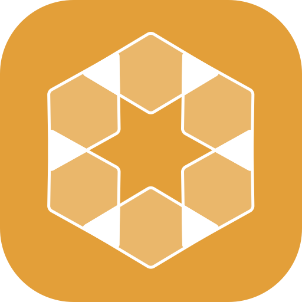

A window switcher for macOS in three shapes — a held-modifier row, a searchable list, or every window at once. You pick one, and the other two stay out of the way.
hexad is one of three things at a time, never all three. Square is a row of tiles you cycle while a modifier is held. List takes focus so you can type a few letters. Grid shows every window at once, grouped by display.
Up to three key bindings, each recorded from a real keystroke and stored as a virtual key code, so a chord recorded on one layout still works on another. Or a three-finger swipe: one gesture opens, scrubs and commits.
A bare letter cannot be bound — it would swallow that letter in every app, forever. And the last binding cannot be removed, because clearing it locks you out of an app whose only interface is the thing you just unbound.
$ git clone https://github.com/smrazar/hexad.git $ cd hexad $ ./Scripts/install.sh
This is an early build. The features above exist in the binary; whether each one has been watched working is tracked honestly in docs/STATUS.md. There is no release yet, and no binary download.